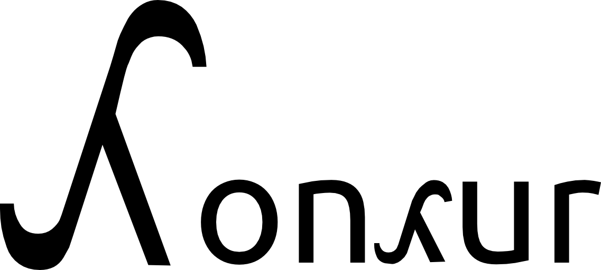

Type System
Overview
Concur's type system expresses a blend of differing ideas, packaged to create a consistent,
logical whole. Concur's type system is designed to make it easy for the programmer to extend
and generalize -- subtyping, parametric polymorphism, ad-hoc polymorphism in particular
help the programmer to develop a good model of the relations between types (not only in code,
but also mentally.)
Philosophy/Conceptual Differences From Other Languages
In general,types in Concur represent different kinds of
possible values and computations (since values are actually computations in Concur under
the regime of non-strict evaluation.) This differs significantly from many mainstream
languages. For example, it may not be sensible in other languages
to say that a "computation that can be proven to terminate" is a type, but in Concur it is.
Concur makes it possible to categorize different values/computations into logical
groups, expressed by the concept of subtyping. Unlike many object-oriented languages, there
is no concept of a "method". Types do not implement methods -- instead, values
of types are accepted by functions, or not, depending on whether they fit with the signature
or not. This allows functions in Concur to be more powerful than methods, and arguably more
powerful (conceptually) than multimethods.
In addition to rejecting the notion of a "method", Concur rejects the notion of a "member"
of a data structure, which is arguably the most radical departure from mainstream languages.
Since values are computations, and functions allow the construction of computations,
"members" of data structures are really just the return values of functions with specific
names. While Concur's syntax allows the familiar "thing.member" form, this conceptual
simplification and generalization allows a flexibility in definition and use of
data structures that is unparalleled.
Types
Types in Concur belong to two different categories: real and virtual types. Real types
are types that will actually find expression as different kinds of values at run-time,
and virtual types may be used to express collections of types where the collection does not
make sense as a type itself. For example, the type "Any" in Concur expresses the type of all
types. [That is, a function accepting an "Any" as a parameter can accept anything] It does
not make sense to actually have a value of type "Any", so "Any" is a virtual type. On the
other hand, it makes perfect sense to have a value of type "Bool". This distinction between
the real and virtual types will be elaborated upon below, where it becomes clear that only
supertypes that are real can be distinguished from their subtypes. For now,
type A defines a real type with the name A, and
virtual A defines a virtual type. Types are scoped by namespace,
just like functions.
Subtyping
In general, the relation of "subtyping" in Concur can be read as "can be accepted as a _ in
a function". Syntactically, subtyping is a definition of one of the following three forms:
A subtypes B
A subs B
A <: B
All of the above forms are equivalent. In addition, three more forms are provided for
convenience:
A supertypes B
A sups B
A :> B
The three forms above are equivalent to each other and to B subs
A.
Technically, all of the forms above do not form some special "infix exception" to the
syntax. Rather, all of the above forms behave as "type-level operators" that are subject
to the same reordering that functions have. For example,
A subs B
is reordered to
subs A B
, but it is more idiomatic to use an infix notation.
Syntactic quibbles aside, the subtyping relation above means that A can be used in
any function as a substitute for any parameter with a declared type of B. That's all.
Functions
Okay, I lied -- there is a lot more to subtyping, even though the above description is a
good ideological summary statement.
Recall that functions are defined using "def", of the form:
def (returntype functionname) (paramtype1 paramname1) ...
implementation
From now on, the partial type signatures of functions as defined with "def" will be written
as (returntype functionname) paramtype1 ...
for convenience. [Where we don't care about the return type, it will be omitted
along with the parens around the function name.]
Concur supports ad-hoc polymorphism -- that is, multiple definitions may exist under the
same function, so long as different types are accepted as parameters. Then, when the
function is used, the implementation is selected based on the types of the parameters
passed to it, in a left-to-right, specific-to-general order of precedence.
That is, say there exists a F Any Int and a F Int Int. The
implementation for the definition of F with the second type signature will be called
if the first argument passed is "Int", because Int is a subtype of Any, and parameters
are passed left-to-right. Concur's type checker shouldn't care what the return type is
as a general rule. The dispatching of a function depends on the parameters passed
and nothing more. As a consequence, it is ambiguous to define two different implementations
of a function with the declared types of the parameters equivalent where both implementations
exist as part of the same namespace.
NotImplemented
Another way to look at the statements made above is to say that the existence of a function
implementation for more general types requires that the same function applies to more
specific types [subtypes of the general types]. This insight makes functions with
"NotImplemented", or "NOP" as the implementation body make more sense -- "NotImplemented"
allows a programmer to define a general operation involving a general type, leaving the
specifics of implementation to specific types. For example, in a GUI library, "draw" might
have "NOP" as the body for the implementation of signature Draw Drawable.
However, "NOP" is special -- it belongs to NO TYPE, not even Any.
What that means is that any time
that NOP has the potential to be the return value of a function used in a program,
a type error is raised. By doing this, "NOP" allows a programmer to REQUIRE implementations
of a function that operate upon more specific parameters than the declaration with NOP,
which accomplishes a function similar to "virtual methods" in other languages.
Return types
A function may also have a return type that is a supertype of other types -- what this
actually means is that the return type of the function at run-time may actually be any
type that is a subtype of the declared return type, or in the case of a real return type,
the type itself or anything that subtypes it. Because of this distinction between return
types declared at compile-time and and actual return types at run-time, many other languages
with a similar subtyping mechanism are split into "statically typed" and "dynamically typed"
camps. The line is blurred a bit in Concur -- by default, types are statically checked, with
the requirement that all parameters passed into functions have declared types that are
guaranteed to be subtypes of the required parameter types. However, Concur implementations
are REQUIRED to have an option to defer such checking to runtime in any case that a passed
parameter COULD possibly fit with the type signature of the function. [Impossible cases will
still be rejected statically.]
Virtual/Real distinction
As mentioned earlier, types can be either virtual or real. In reality, the only difference
between virtual and real types in Concur is that at run-time, any value that has a virtual
type [as declared before run-time] MUST be of a type that is a subtype of the virtual type.
With a real type, this does not necessarily need to be true. This is very relevant for
type inference in Concur, because a virtual type is essentially equivalent to the set of
all of its subtypes, but a real type is equivalent to the set of all of its subtypes with
itself as an addition. Since determining whether a type is a subtype of another is actually
reduced to determining whether a set of types is a subset of another, a virtual type with
only one subtype is equivalent to that subtype.
Type Variables
In place of any declared parameter type for a function, a type variable may be used instead.
A type variable can have any name that does not name a defined type, and a type variable
will accept any type [in the trivial case]. However, the type of the leftmost
parameter passed to the function [in the location of a type variable] will define the
type required for any further
occurrences of the type variable [to the right or in the return type].
For an example, consider the type of "id",
the identity function: (A id) A -- since "id" is the identity function, and
it returns whatever input it takes unchanged, its return type must match the passed parameter
type, no matter what it is. A type variable allows the expression of this concept.
Parametric Types
The example of the identity function above should seem a little contrived, because it is.
In reality, type variables find most of their power when used in conjunction with parametric
types.